BRAND
VOICE
THE SUNSHINE GUIDE
Florida isn't just a destination, it's an open invitation to live in a sunkissed state of mind - to indulge in what you love and feel comfortable trying something new and Live More Floridays.
Our tone is warm and welcoming, just like the Florida sun. We radiate the kind of optimism that makes the expansiveness of the state feel accessible and brimming with possibility. Our voice strikes the right balance of welcoming, adventurous, knowledgeable and charismatic in a way that builds trust, brings inspiration and fosters real connections with potential visitors.
FONTS &
USAGE
The headlines use a friendly, attention grabbing font called Allotrope.
In order to maintain proper hierarchy, headlines should always be larger than subheads, and subheads should be larger than body copy.
ABCDEFGHIJKLMNOPQRSTUVWXYZ abcdefghijklmnopqrstuvwxyz 0123456789!@#$%^&*()[]?+
ABCDEFGHIJKLMNOPQRSTUVWXYZ abcdefghijklmnopqrstuvwxyz 0123456789!@#$%^&*()[]?+
ABCDEFGHIJKLMNOPQRSTUVWXYZ abcdefghijklmnopqrstuvwxyz 0123456789!@#$%^&*()[]?+
ABCDEFGHIJKLMNOPQRSTUVWXYZ 0123456789!@#$%^&*()[]?+
TYPOGRAPHY COLOR PAIRINGS
Shown here are approved typography and background color combinations for maximum legibility.
Always use white text over images or video backgrounds. Ensure that all background imagery provides sufficient contrast for text legibility. Images may need to be adjusted
(e.g., darkened or blurred) to meet accessibility and readability standards.
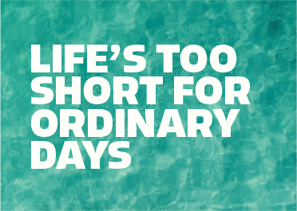
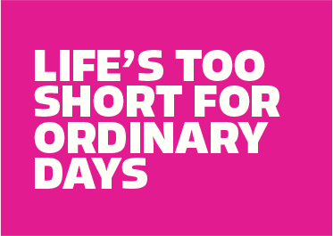
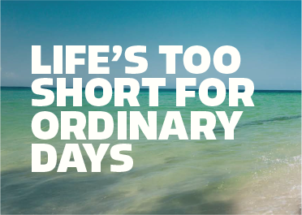
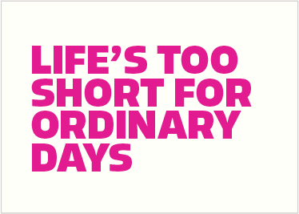
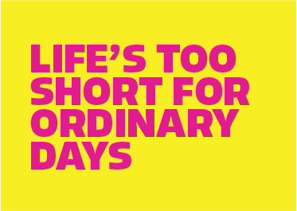
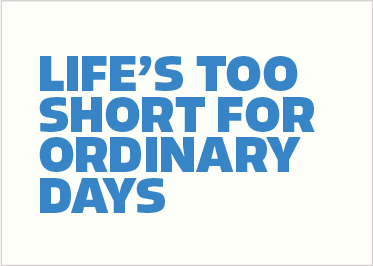
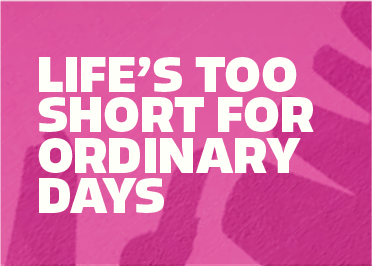
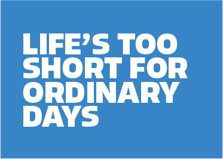
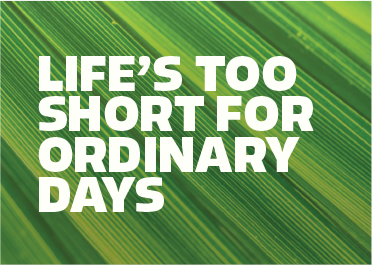
HEADLINE
PLACEMENT
Headline typography is meant to make a statement; it's big, bold, and graphic.
It should ideally take up 30% of the total image area, but can vary slightly based on size and headline length. Headlines can weave behind or atop imagery. The preferred alignment is left-aligned on the left side of the compositions.
Headlines should be in all-caps and the same size. Utilizing multiple font sizes in one headline should be avoided where possible. Headlines are often stacked and narrow. To achieve this, the number of words per line should be less than four.
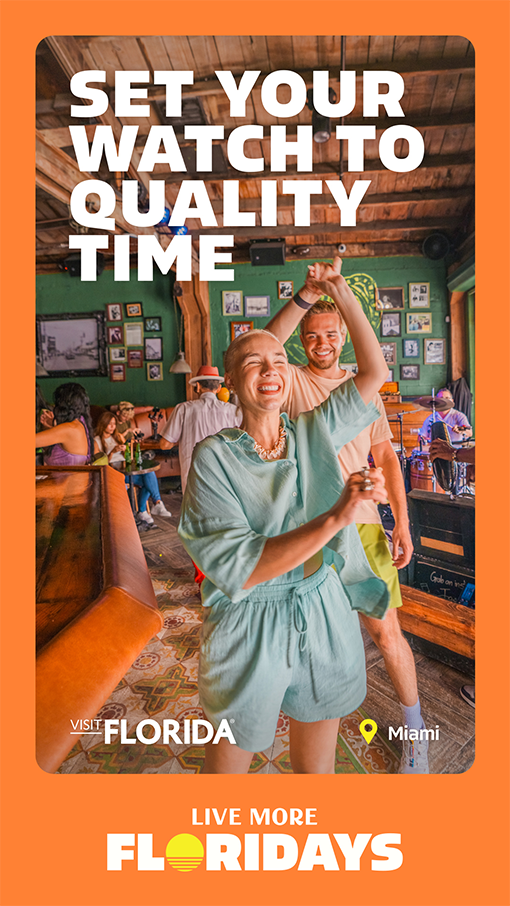
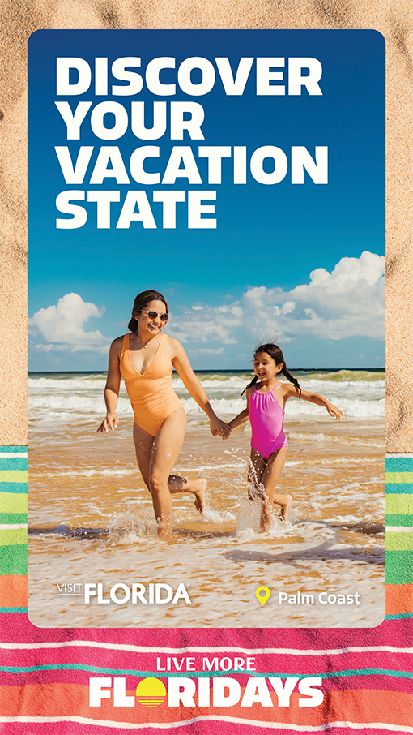
COLOR
PALETTE
The Live More Floridays color palette is bold, tropical, and vibrant - perfectly tuned for Florida.
From saturated sunsets to crystal-clear waters and lush greenery, it captures the full spectrum of Florida's natural beauty.
Together, these colors bring the spirit of Florida to life - sunny, lively, and endlessly colorful.
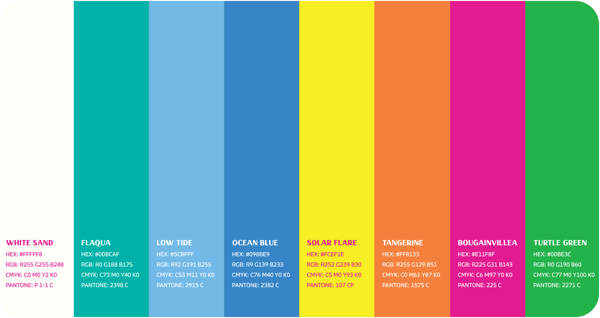
COLOR PALETTE
APPLICATION
Shown here are examples of how the color palette can come to life in creative tactics.
Imagery with natural tones reflecting the brand palette is preferred, in order to complement and strengthen the color system.
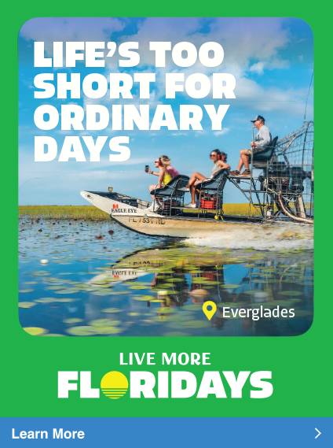
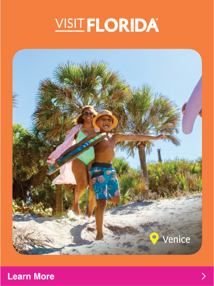
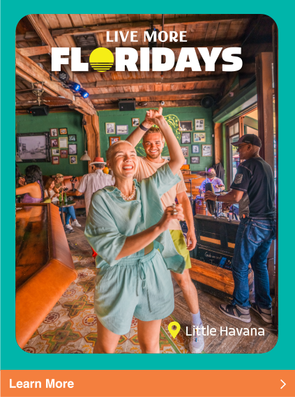
COLOR PAIRING
STRATEGIES
There are two primary strategies for color pairing. Both methods can effectively support the brand, and the choice should depend on the desired tone and visual impact of the execution in relation to surrounding visuals.
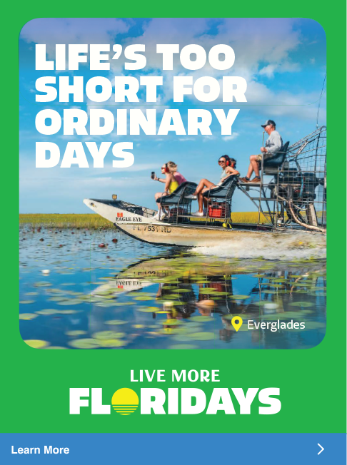
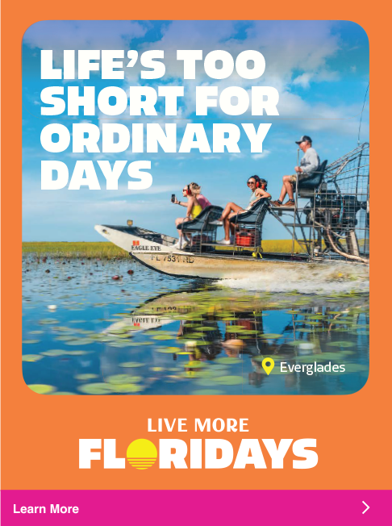
SEASONAL
COLOR USAGE
Color should be thoughtfully applied with attention to both season timing and geographic relevance. The final materials should evoke the mood and atmosphere Florida provides during that time.
The full brand color palette can be used year-round across all markets and seasonal color combinations are illustrated here.
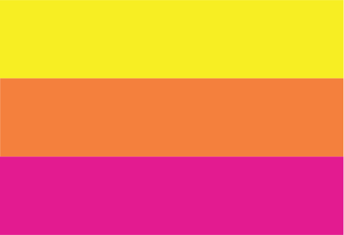
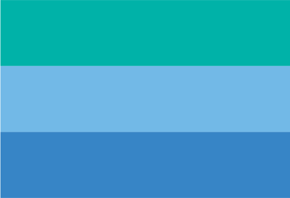
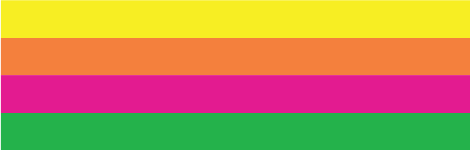